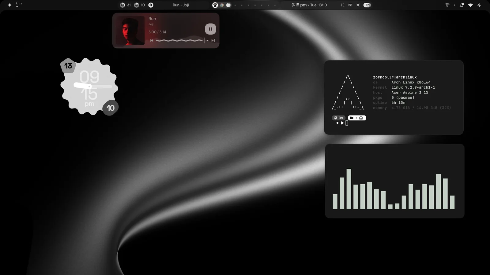
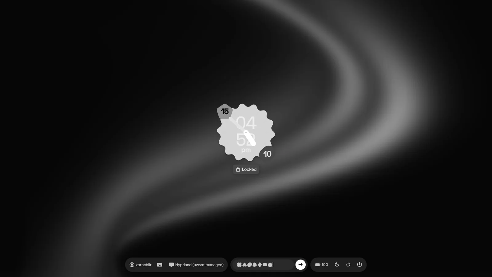
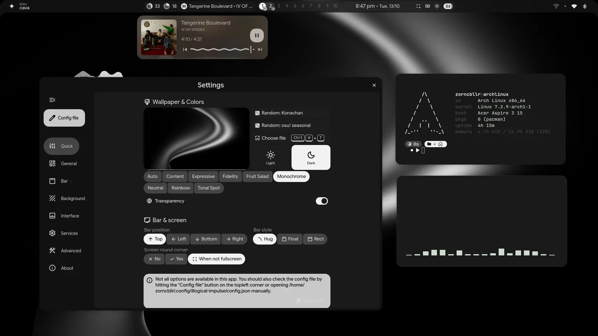
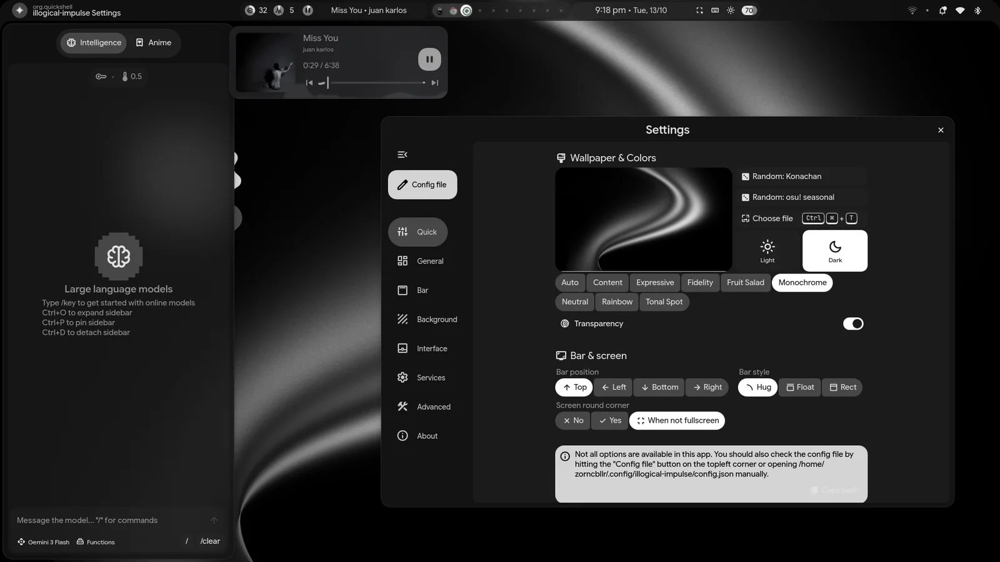

terminal
One command
./install.sh installs the packages, links the configs, sets up the system and the login screen. Running it again is safe.
A complete desktop that installs with one command: Material You colours from your wallpaper, a matching zsh and kitty setup, and a login screen that looks exactly like your lock screen.
git clone https://github.com/zorncbllr/zorncbllr-dots && cd zorncbllr-dots && ./install.sh
Built around the Illogical Impulse shell, with the rough edges sanded off: a safe installer, a terminal that matches, and a login screen to finish the picture.
./install.sh installs the packages, links the configs, sets up the system and the login screen. Running it again is safe.
GNU stow links every file, so your live config is the repo. Existing files are backed up first, and --dry-run shows exactly what would change.
Material You colours are generated from the wallpaper and reach the shell, the terminal and even the login screen.
An SDDM theme that reproduces the lock screen: blurred wallpaper, cookie clock, pill-shaped islands, shape characters as you type.
zsh, kitty, starship and fastfetch from plain Arch packages, with autosuggestions and syntax highlighting. No oh-my-zsh.
One line per step, retries on a flaky network, full details in a log. If something stops, run it again and it picks up where it left off.
tests/fresh-arch.sh builds a fresh Arch container, runs the real installer and checks the result, including the login theme.
Defaults are seeded once and never overwrite an existing config. Machine-specific tweaks go in ~/.zshrc.local, untracked.
A monochrome Material You scheme with rounded shapes and springy motion. Click any screenshot to enlarge it.




The SDDM theme is a port of the real lock screen components, so logging in feels like unlocking. Because SDDM already asked for the password, the shell's lock-on-startup is off by default.
keyboardTry the password field. Every key becomes a shape, as on the real thing.
Demo only: nothing is checked or sent anywhere. Enter always answers "Incorrect password".
Arch Linux only. Run it as your normal user; it asks for sudo when it needs it. Anything it would overwrite is moved to ~/.dotfiles-backup-<time>/ first.
Keep the clone where you put it: the symlinks point into it.
git clone https://github.com/zorncbllr/zorncbllr-dots ~/zorncbllr-dots
cd ~/zorncbllr-dotsThe preview lists what would be linked and which of your files differ. The install does everything: packages, links, system setup, the login screen.
# see what would change, touches nothing
./install.sh --dry-run./install.shThat applies the new groups and login shell, and shows the new login screen.
| --dry-run | Show what would be linked or backed up; change nothing. |
| --no-deps | Skip package installation and the python venv. |
| --no-system | Skip groups, services and the login screen. |
| --no-sddm | Don't install the login theme or enable SDDM. |
| --no-chsh | Keep your current login shell. |
| --sddm-only | Only (re)install the login screen, e.g. after changing the wallpaper. |
| --sddm-preview | Look at the login screen in a window; installs nothing, no root. |
| --verbose | Show all tool output instead of the one-line steps. |
| zsh kitty … | Only link these packages, e.g. ./install.sh zsh kitty. |
To undo: ./uninstall.sh removes the symlinks (add --with-sddm to remove the login theme too). Packages and your backups stay.
Not silently. Files that already exist are moved to a timestamped backup folder before linking, --dry-run shows which of your files differ from the repo, and the default settings are only seeded when no config exists.
No. --no-sddm skips the login screen entirely. If another display manager (GDM, LightDM…) is already enabled, the installer installs the theme but leaves your display manager alone and tells you how to switch.
No, it targets Arch Linux: it uses pacman and yay and the Arch package names.
Run ./install.sh --sddm-only. The login screen can't read your home folder, so the installer copies the wallpaper and palette into the theme; re-running it picks up the current ones.
It is a fork of end-4/dots-hyprland (Illogical Impulse) with a new installer, a zsh-first terminal, defaults of its own and the login theme. It stays under the same GPL-3.0 licence.